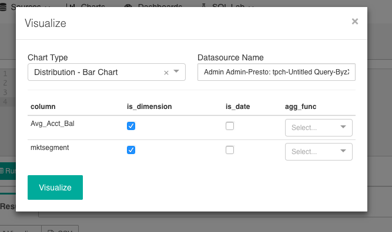

Using Apache Superset#
Basic usage for Presto on AWS#
Log in to Superset#
1. CloudFormation console Navigate to the CloudFormation Console under “Management Tools” within the Services menu.
2. Outputs Select your “Stack Name” and click the associated tab labeled “Outputs”.
3. Retrieve Superset password Find and copy the “Superset Admin Password”.
4. Superset URL Locate and click the “Public Superset URL”.
5. Complete login Once at the sign in page, enter “admin” within the username field and your copied Superset password into the password field. You are then redirected to the Superset dashboards page.
Query demonstration with SQL Editor#
1. Open SQL Editor Navigate to the “SQL Lab” drop-down menu at the top of the page. Click “SQL Editor”.
2. Specify Database and Schema Select the database drop-down menu, and click the “tpch” database. Move down to the schema drop-down menu and choose “sf1”.
3. Add Table Under the add a table drop-down menu select “customer” to get a sense for the data you are working on. Immediately, you should be presented with a preview of the customer table.

4. Write the query Type the SQL code, from the screenshot below, into the window.
5. Run the query When finished typing and reviewing the SQL code, press “Run Query”.

6. View results When done processing, Superset displays the results of your query under the “Results” tab below the query window, as shown in the screenshot below.

Visualization and dashboard demonstration#
1. Navigate to visualization tool From the Results tab navigate to the “Visualize” button located just above your results.
2. Specify visualization You are presented with a visualization specification window.
Under the chart type drop-down menu select “Pie Chart”.
Under the agg_func drop-down menu select “AVG(x)” for the column Avg_Price.
Click “Visualize”.

3. Finalize visualization You are directed to a new page containing your preliminary visualization.
Data:
Navigate to the “Data” tab in the upper left-hand corner of the page to further tailor your graph.
Under the Group by drop-down menu deselect “Avg_Acct_Bal” and select “mktsegment”.
Double click on the “undefined - untitled” title on the visualization and type a new title.
A popup appears prompting you to implement these changes. Click “Run Query”.
Style:
Select the “Style” tab directly next to the current “Data” tab to customize the aesthetics of your visualization.
Under the Label Type drop-down menu select “value”.
If you desire, further specify the colors of the wedges and location of the labels.
4. Save to dashboard When content, navigate to the “save” button at the top, left-hand corner of the page. You are presented with a popup “Save A Chart” window. From here, name the chart and specify a dashboard to save it to. If you don’t have an existing dashboard or wish to save it to a new one, name and add a new dashboard.


{kind=link}
Superset documentation reference#
To learn more about Apache Superset and additional functions refer to their documentation.